Disassembly and Assembly
STEERING GEAR AND LINKAGE DISASSEMBLY/ASSEMBLY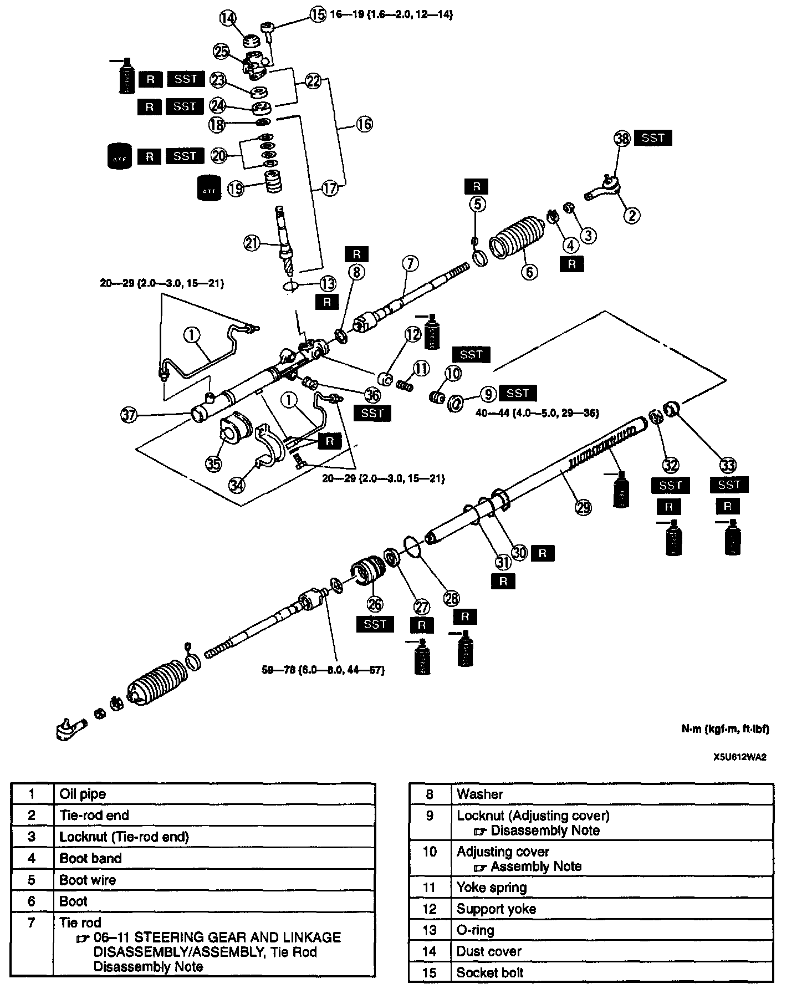
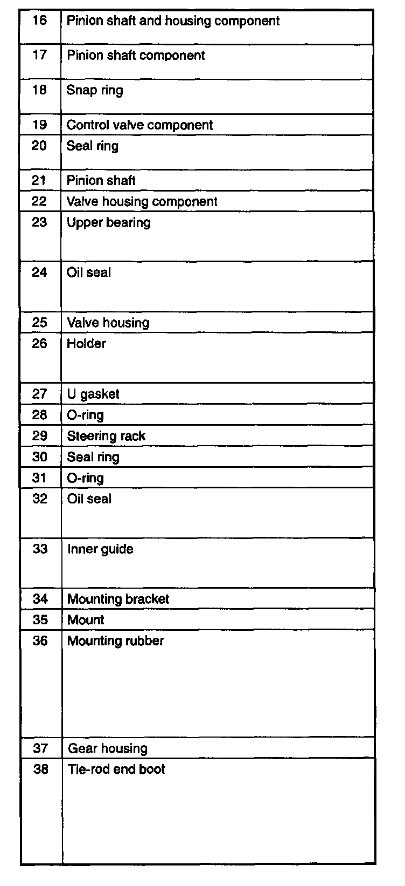
1. Disassemble in the order indicated in the table.
2. Assemble in the reverse order of disassembly.
Locknut Disassembly Note
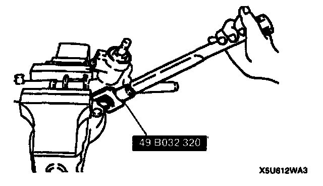
- Remove the locknut by using the SST.
Pinion Shaft And Housing Component Disassembly Note
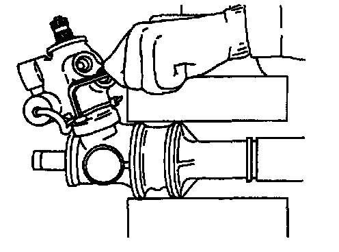
1. Remove the socket bolts (2 points) which fix the pinion shaft and housing.
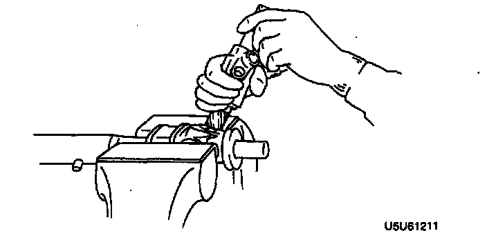
2. Hold the pinion shaft as shown, and pull out the pinion shaft and housing component.
Pinion Shaft Component Disassembly Note
Note:
- If the pinion shaft does not come out easily, remove it by using a press.
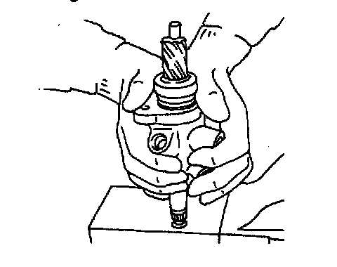
- Push out the pinion shaft component from the valve housing as shown.
Snap Ring Disassembly Note
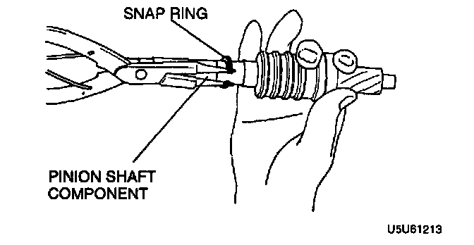
- Carefully remove the snap ring without damaging the pinion shaft component.
Upper Bearing, Oil Seal Disassembly Note
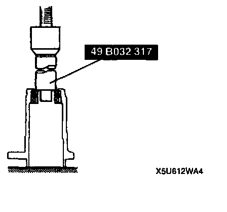
1. Set the SST as shown.
2. Using a press, remove the oil seal and upper bearing without applying pressure to the edge of the valve housing.
Holder Disassembly Note
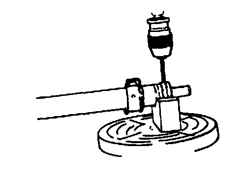
1. Cut away the staked area by using a drill.
Caution:
- Carefully pull out the holder without damaging the U gasket.
2. Remove the holder.
Oil Seal, Inner Guide Disassembly Note
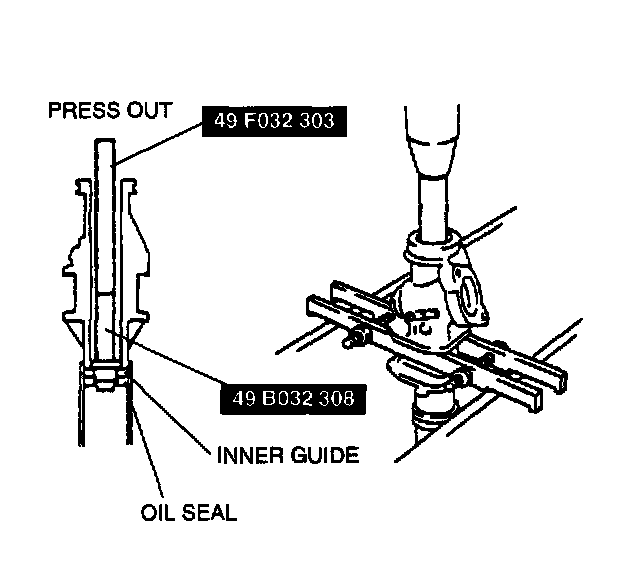
1. Set the SSTs into the valve side.
2. Press out the oil seal and inner guide.
Oil Seal, Inner Guide Assembly Note
1. Install a new O-ring and new seal ring to the rack's piston.
2. After installing the seal ring, seat it properly at the piston circumference.
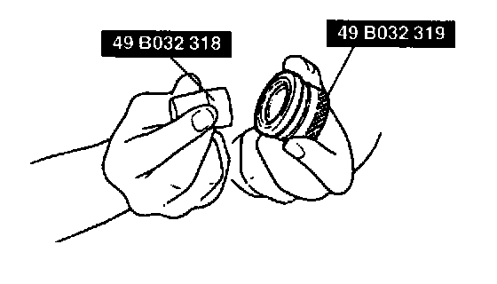
3. Install a new oil seal and inner guide to the SST.
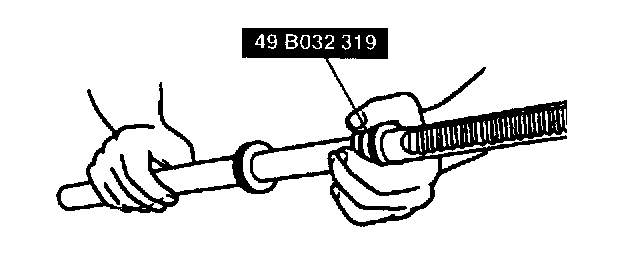
4. Using the SST, place the oil seal and inner guide at the edge of the steering rack's pinion, and remove the SST.
Caution:
- When pressing in, do not apply a load pressure of more than 39230 kPa (400 kg-cm2, 5688 psi), because to do so will damage the oil seal and inner guide.
- Apply grease to the seal ring, oil seal and inner guide.
5. After mounting the steering rack to the gear housing, use a press to install the oil seal and inner guide to the correct position.
Holder Assembly Note
1. Apply grease to the U-gasket and O-ring.
2. Assemble the U-gasket and O-ring into the holder.
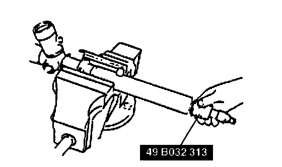
3. Assemble the holder by using the SST.
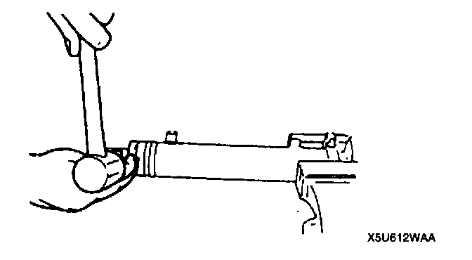
4. Stake the holder to the cylinder by using a punch.
Oil Seal Assembly Note
1. Apply grease to a new oil seal.
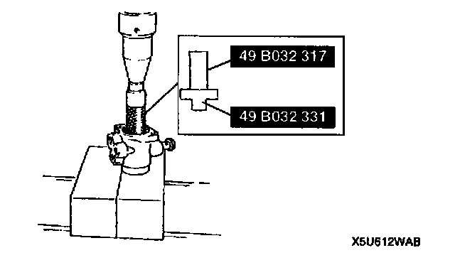
2. Press in the new oil seal by using the SSTs.
Upper Bearing Assembly Note
1. Apply grease to a new upper bearing.
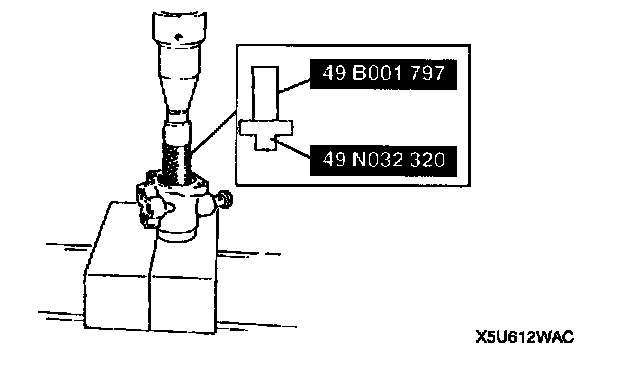
2. Press in the upper bearing by using the SST.
Seal Ring Assembly Note
1. Install a new seal ring to the valve part of the pinion shaft by using the SST.
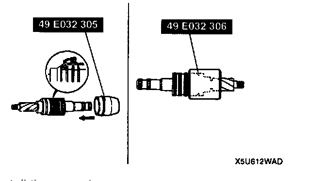
2. After installing it, seat it properly by using the SST.
3. Install the snap ring.
Adjusting Cover Assembly Note
1. Set the rack to the center position.
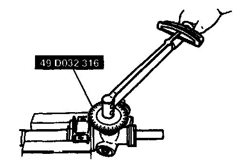
2. Tighten the adjusting cover to 4.9 Nm (50 kg-cm, 43 inch lbs.) three times, then return it 25° by using the SST.
3. Apply sealant to the threads of the locknut.
4. Attach the locknut.
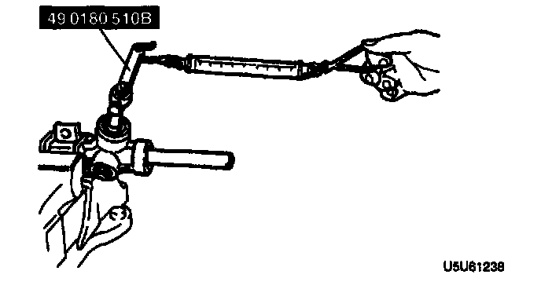
5. Measure the pinion torque by using the SST and a Dull scale.
Standard Center of rack ± 90° 1.0-1.1 Nm (10-12 kg-cm, 8.7-10.4 inch lbs.)
6. If not as the specified, repeat steps 2 through 6.
7. Install the locknut by using the SST (49 B032 320).
Tightening torque 40-49 Nm (4.0-5.0 kg-m, 29-36 ft. lbs.)
Hermetic Sealing Inspection
1. Connect the SSTs to the power cylinder section of the gear housing.
2. Apply 53.3 kPa (400 mm-Hg, 15.7 inch Hg) vacuum with a vacuum pump and verify that it is held for at least 30 seconds.
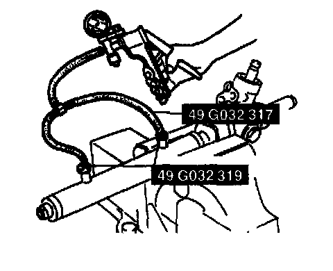
3. If the vacuum is not held, replace the oil seal.
STEERING GEAR AND LINKAGE INSPECTION
Tie-Rod End Inspection
(Refer to STEERING GEAR AND LINKAGE INSPECTION, Tie-rod End Inspection.)
Tie Rod Inspection
(Refer to STEERING GEAR AND LINKAGE INSPECTION, Tie Rod Inspection.)
Steering Rack Inspection
(Refer to STEERING GEAR AND LINKAGE INSPECTION, Steering Rack Inspection.)